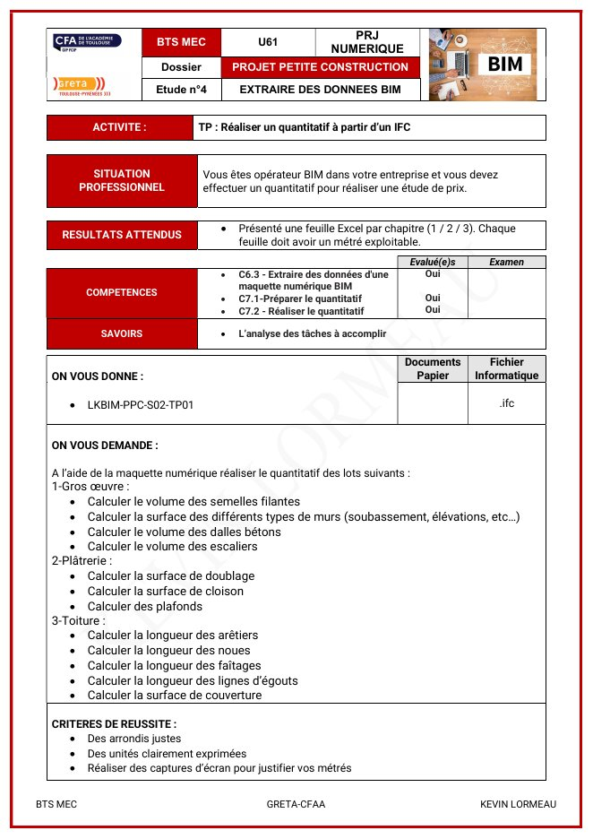

Projet petite construction · Étude n°4 · Extraire des données BIM · Consigne
Consigne du TP
Situation professionnelle : Vous êtes opérateur BIM dans votre entreprise et vous devez effectuer un quantitatif pour réaliser une étude de prix.
On vous donne : la maquette numérique LKBIM-PPC-S02-TP01.ifc.

01
On vous demande
À l’aide de la maquette numérique, réaliser le quantitatif des lots suivants.
LOT 1
Gros œuvre
- Calculer le volume des semelles filantes
- Calculer la surface des différents types de murs (soubassement, élévations, etc.)
- Calculer le volume des dalles béton
- Calculer le volume des escaliers
LOT 2
Plâtrerie
- Calculer la surface de doublage
- Calculer la surface de cloison
- Calculer la surface des plafonds
LOT 3
Toiture
- Calculer la longueur des arêtiers
- Calculer la longueur des noues
- Calculer la longueur des faîtages
- Calculer la longueur des lignes d’égout
- Calculer la surface de couverture
02
Résultats attendus
- Présenter une feuille Excel par chapitre (1 / 2 / 3).
- Chaque feuille doit avoir un métré exploitable.
03
Critères de réussite
- Des arrondis justes
- Des unités clairement exprimées
- Des captures d’écran pour justifier vos métrés
04
Compétences évaluées
C6.3
Extraire des données d’une maquette numérique BIM
C7.1
Préparer le quantitatif
C7.2
Réaliser le quantitatif
05
Déroulé conseillé (4 h)
| 0 h 15 | Préparer | Lire la consigne, ouvrir l’outil et la maquette, créer les chapitres et les ouvrages (unités, arrondis). |
| 1 h 15 | Lot 1 · Gros œuvre | Semelles, murs par type, dalles, escaliers. Nomenclatures et contrôle des doublons. |
| 0 h 45 | Lot 2 · Plâtrerie | Doublages, cloisons, plafonds. |
| 1 h 00 | Lot 3 · Toiture | Outil Arête pour arêtiers, noues, faîtages, égouts ; surface de couverture. |
| 0 h 45 | Contrôler et rendre | Mode Contrôle, captures titrées, export Excel, vérification du fichier, dépôt. |
Pensez-y : cliquez « Sauvegarder » dans l’outil toutes les 30 minutes, et vérifiez votre fichier Excel avant de le déposer.